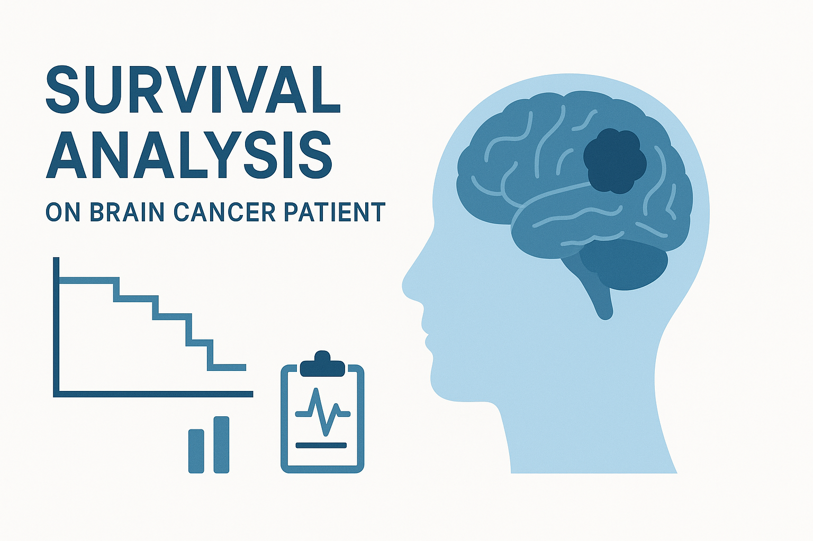
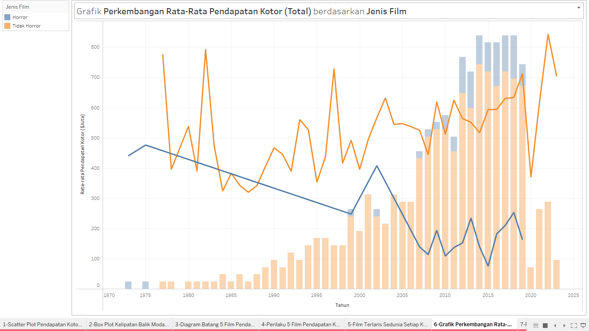

In this project, I conducted survival analysis using R (rpart, ctree, and Cox Proportional Hazards Model) on a brain cancer patient dataset to identify key risk factos affecting survival time. I visualized survival curves and hazard functions to support medical decision-making, and demonstrated actuarial applications through risk-adjusted pricing and underwriting based on medical risk profiles using RStudio and Python.


In this project, I prepared and integrated raw data from kaggle to create clean, analysis-ready datasets, then developed forecasting models using Multiple Linear Regression, Random Forest, and XGBoost to predict bike rental demand based on seasonal trends, time factors, and weather conditions. I evaluated model performance using RMSE and cross-validation to ensure predictive accuracy, utilizing tools such as RStudio and Python.

In this project, I developed an interactive dashboard using Tableau to visualize key metrics from a movie dataset and bookshop dataset, including sales, ratings, genres, and other performance indicators. I utilized filtering, calculated fields, and KPI indicators to highlight business insights and identify key performance drivers for data-driven decision-making.